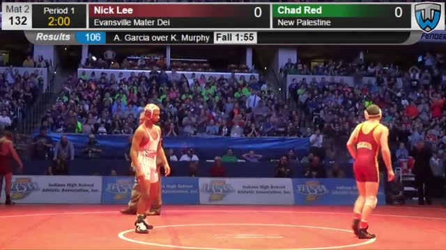
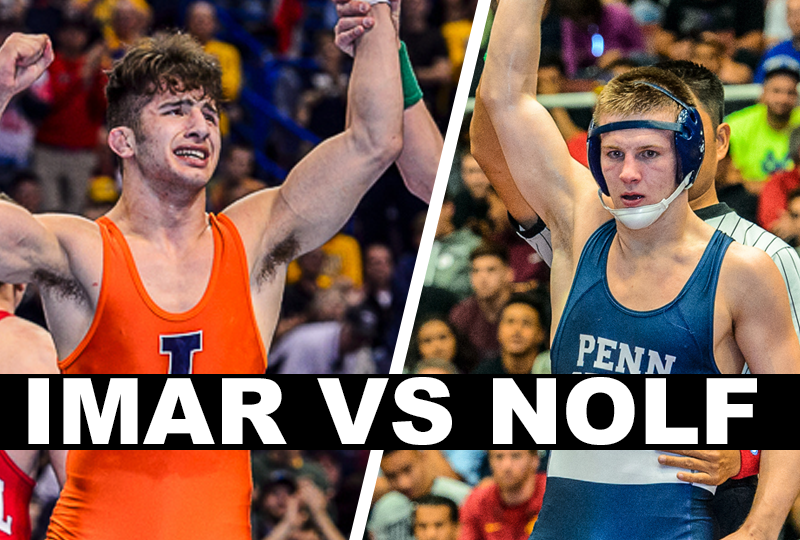
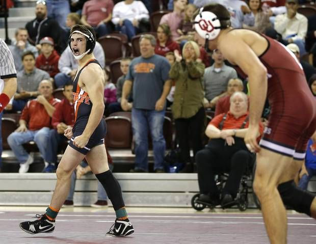

Top 5 Matches
Every year from high school to college there are must see matches. From State finals to NCAA rivalry matches you never want to blink during these matches. Below are the top 5 matches of the year:
#5. HIGH SCHOOL: Luke Pletcher (Pennsylvania) vs. Yianni Diakomihalis (New York) Who's #1 Semi Finals.

In a match between two of the best high school studs in the country Pennsylvania's Luke Pletcher and New York's Yianni Diakomihalis didn't dissapoint at all! Ranked #2 and #3 respectivly Pletcher and Diakomihalis battled in a tight back and forth match but in the end it was the 2X PA state champion who finished strong with a late takedown to take out the Cadet World Champion.
#4. HIGH SCHOOL: Chad Red (New Palestine) vs. Nick Lee (Evansville Mater Dei) Indiana State Finals.

Can anyone stop Chad Red from becoming Indiana's next 4X state champion? Can anyone hand him his first high school loss? Nope. Chad Red ranked #1 in the country joined two elite classes after his win, becoming not only a 4X state champion but an undefeated champion, compiling a 189-0 record throughout high school! The Penn State commit in Nick Lee wouldn't go down quietly though and lead for a good portion of the match after throwing Red to his back with a strong firemans carry, but it was all Red in the end, running into the crowd after making history with his victory.
#3. HIGH SCHOOL: Chad Red (Indiana) vs. Luke Pletcher (Pennsylvania) Who's #1 Finals.

After making quick work of a very competitive Talyor Lamount, the Nebraska commit Chad Red, ranked #1, had his hands full with the Ohio State commit Luke Pletcher. In an absolute barn burner of a match with tons of offense but a not-so suprising low score Red and Pletcher put on one of the best matches in recent history. The match couldn't be decided in regualtion and continued to impress throughout the overtime period, but in the end it was Red who ended up on top despite some people arguing that Pletcher was robbed. In the end both of these young men are absolute beasts and together put on the #1 high school match on the list and hopefully we will see these two back at it as they both compete in the Big 10 confrence next year.
#2. NCAA Division 1: Jason Nolf (Penn State) vs. Isaiah Martinez (Illinios) Illinios vs. Penn State Dual.

In a head to head match of undefeated college studs this match of Isaiah Martinez of Illinois vs. Jason Nolf of Penn State was one that everyone had their eyes on. Martinez coming off an undefeated national championship year was continuing his success all season and showed no signs of slowing down. Nolf the redshirt freshman for the Nittany Lions has been dominating in his freshman campaign compiling an equily impressive undefeated record this year. When these two stud went at it all eyes were ready to see someones streak come to an end and in a #1 vs #2 match many were suprised when Nolf was the victor, but everyone was shocked when the redshirt pinned the defending national champion! This match was very physical and even more interesting and that's why it gets landed #2 on the top 5 matches of the year.
#1. NCAA Division 1: Kaid Brock (Oklahoma State) vs. Cory Brewer (Oklahoma) Bedlam Dual.

Here we go! The #1 match of the year! True freshman Kaid Brock taking on the defending national champion Cody Brewer! This match was absolutley insane and turned the wrestling world on its head! After Zeke Moisey's improbable run to the NCAA finals last year at 125lbs after his coach pulled his redshirt, no one thought Oklahoma State's Kaid Brock could do the same. Head coach John Smith, the 5 time NCAA champion and Olympic Gold medalist had other plans and confidence in his freshman stud when he told him the day before the Bedlam dual between bitter in-state rivals, that he would be pulling his redshirt and he would be facing the national champ. Brock, not phased by Brewers accomplishments caught fire right out of the gate taking the Oklahoma Sooner in the first seconds of the match then he lit the world on fire when he hit a beautiful inside trip throwing the champ to his back for the pin in the first period! Brock's incredible win would be saddly short lived as he would be ruled out for the season after an injury in a match against NCAA national finalist Nahshon Garrett from Cornell. Even though Brock won't be competing at Nationals everyone will be eagerly awaiting his return and while he waits he can marval at his short work of a national champ thats earned him the #1 spot on our list.